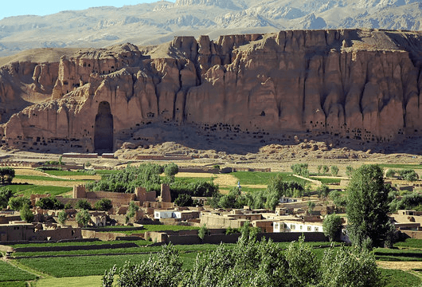
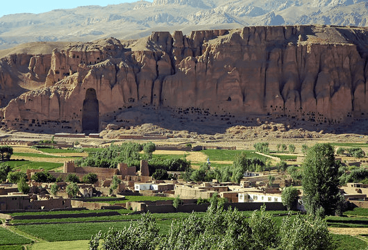

Afghanistan
Afghanistan is located in Central Asia with Iran to the west and Pakistan to the east. Tall, forbidding mountains and dry deserts cover most of the landscape of Afghanistan. The jagged mountain peaks are treacherous, and are snow covered for most of the year.
Afghans live in the fertile valleys between the mountains and grow their crops and tend to their animals. Only 20 percent of the land is used as fields.
Summers are hot and dry but the winters are very cold, especially north of the Hindu Kush, which is located in the eastern part of the country near Pakistan and Tajikistan. Many rivers flow through the mountain gorges. Snow melt and rain that flow out of the Hindu Kush pool into a low area and never reach the ocean.
Kabul
Kabul is the capital and largest city of Afghanistan. Located in the eastern half of the country, it is also a municipality, forming part of the Kabul Province; it is administratively divided into 22 municipal districts. According to 2023 estimates, the population of Kabul was 4.95 million people

Herat
Herāt is an oasis city and the third-largest city in Afghanistan. In 2020, it had an estimated population of 574,276, and serves as the capital of Herat Province, situated south of the Paropamisus Mountains in the fertile valley of the Hari River in the western part of the country.
Balkh
Balkh is a town in the Balkh Province of Afghanistan, about 20 km northwest of the provincial capital, Mazar-e Sharif, and some 74 km south of the Amu Darya river and the Uzbekistan border. Its population was recently estimated to be 138,594
Nangarhar
Nangarhār also called Nangrahar or Ningrahar, is one of the 34 provinces of Afghanistan, located in the eastern part of the country and bordering Logar, Kabul, Laghman and Kunar provinces as well as having an international border with Pakistan
Nuristan
Nuristan, also spelled as Nurestan or Nooristan, is one of the 34 provinces of Afghanistan, located in the eastern part of the country. It is divided into seven districts and is Afghanistan's least populous province, with a population of around 167,000. Parun serves as the provincial capital